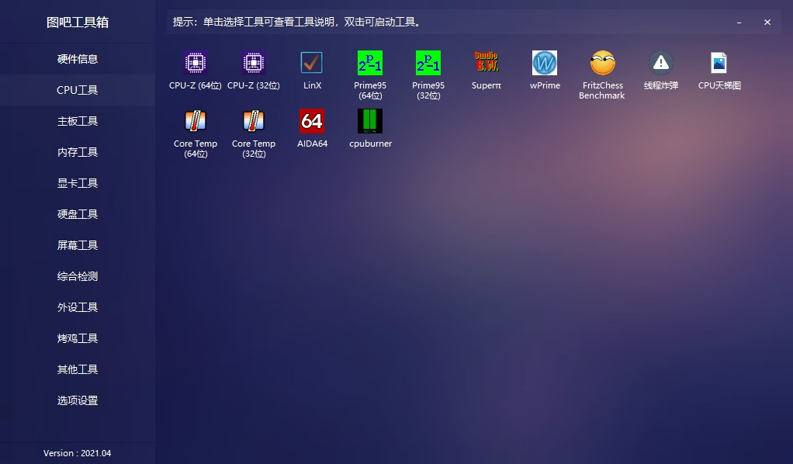
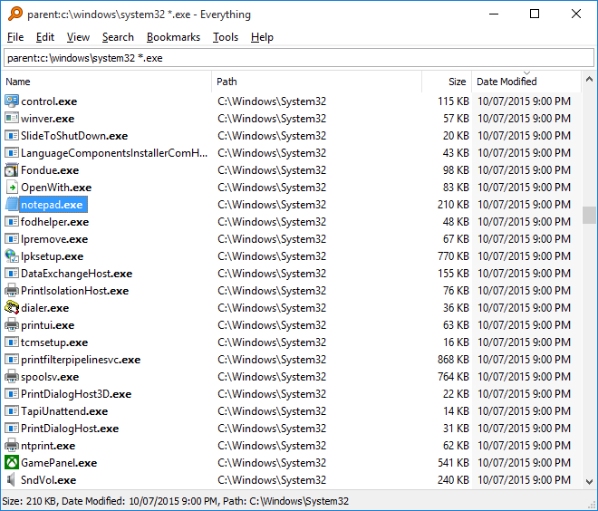
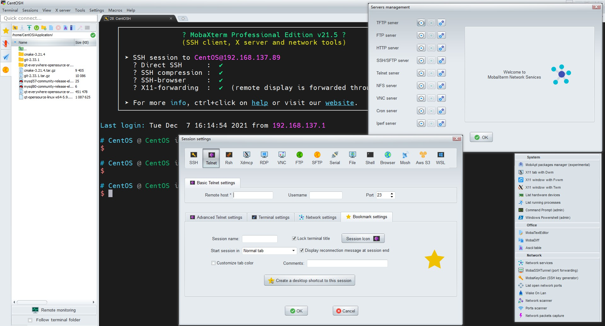
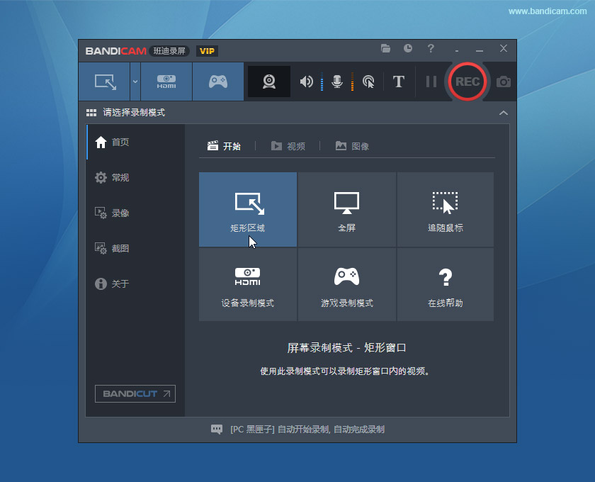

图吧工具箱
图拉丁吧是一个名为图拉丁的百度贴吧，是一个DIY爱好者聚集地，简称图吧，其名字起源于一种CPU核心图拉丁。，图吧每月活跃人数74万，会员近26万。
常驻人员一般称为图丁（图钉），因长期专注于DIY；经常对进行硬件改造；喜好各类二手硬件及古老配置，图钉们又被戏称为收破烂的垃圾佬（图吧垃圾佬）。
从建吧，图吧出过各路顶级硬件技术宅大神，而随着人数增多，也融入了诸多JS及小白等各路人士，大神们逐渐专注深潜，偶尔浮出水面。虽然水平参差不齐，但不乏热心人士积极为大家解答电脑疑难杂症，全力挖掘二手硬件的最大价值。
——百度百科
网址：图吧工具箱

Snipaste
Snipaste 是一个简单但强大的截图工具，也可以让你将截图贴回到屏幕上！下载并打开 Snipaste，按下
F1来开始截图，再按F3，截图就在桌面置顶显示了。就这么简单！你还可以将剪贴板里的文字或者颜色信息转化为图片窗口，并且将它们进行缩放、旋转、翻转、设为半透明，甚至让鼠标能穿透它们！如果你是程序员、设计师，或者是大部分工作时间都在电脑前，贴图功能将改变你的工作方式、提升工作效率。
网址：Snipaste

TrafficMonitor
Traffic Monitor是一款用于Windows平台的网速监控悬浮窗软件，可以显示当前网速、CPU及内存利用率，支持嵌入到任务栏显示，支持更换皮肤、历史流量统计等功能。

Everything
"Everything" 是什么？ "Everything" 是 Windows 上一款搜索引擎，它能够基于文件名快速定文件和文件夹位置。
不像 Windows 内置搜索，"Everything" 默认显示电脑上每个文件和文件夹 (就如其名 "Everything")。
您在搜索框输入的关键词将会筛选显示的文件和文件夹。
网址：Everything

MobaXterm
SSH终端神器，各种网络小工具合集：FTP、X-Server、Port Scanner、iperf、TFTP。。。
网址：MobaXterm
破解补丁：MobaXtermKeygen

ScreenToGif
这个工具允许您记录屏幕上选定的区域，从网络摄像头实时feed或从素描板实时绘图。之后，你可以编辑和保存动画为gif, apng，视频，psd或png图像。
网址：ScreenToGif

Bandicam(不推荐)
Bandicam（班迪录屏）一款简单好用的录屏大师，录屏幕，录游戏，录视频的功能强大的屏幕录像软件，比起其他软件其性能更加卓越。与其他软件相比，用Bandicam录制的视频大小更小，不仅保证原文件的质量。下载免费版，可录制时间最长为10分钟，录制视频打上
www.BANDICAM.com水印。购买Bandicam授权，能够永久使用无功能限制的正式版。注：如需破解版，请自行百度/谷歌。
网址：Bandicam

Typora
Typora是一款由Abner Lee开发的轻量级Markdown编辑器，适用于OS X、Windows和Linux三种操作系统。与其他Markdown编辑器不同的是，Typora没有采用源代码和预览双栏显示的方式，而是采用所见即所得的编辑方式，实现了即时预览的功能，但也可切换至源代码编辑模式。 Typora于2021年11月23日起发布1.0版本，开始成为收费软件，售价14.99美元。 在编辑时，除了通过传统的Markdown代码的方式来实现富文本之外，Typora支持通过菜单栏或者鼠标右键选取命令的方式来实现富文本，也支持通过快捷键的方式插入。Typora也支持通过以TeX的格式来插入行间公式和行内公式。在完成编辑后导出文件时，Typora支持以PDF或Html的形式导出，如果安装了Pandoc，也能够以Word、RTF、MediaWiki、LaTeX等形式导出。在定制方面，Typora提供有几种主题，并支持通过自定义CSS的方式进行个性化定制。
注：如需破解版，请自行百度/谷歌。
网址：Typora
破解方法：Activated version:1.9.3&1.8.10
VeryCapture
VeryCapture是一款综合性的截图工具，起因某次截图不想打开聊天工具，发现其他截图工具，没有 很好支持二次编辑，于是VeryCapture诞生了，希望也能在工作生活中帮到你。
支持截图、任意形状截图、长截图、GIF制作、录音以及录制视频，功能很是强大。
网址：VeryCapture
EV录屏(推荐)
EV录屏软件 [1]是一款非常好用的桌面视频录制软件，这款软件可以帮助用户轻松的录制电脑屏幕，并且功能全免费无水印，是一款非常好用的桌面视频录制软件。由湖南一唯信息科技有限公司开发制作。
- 支持添加“文字水印”和“图片水印”；
- 支持“录制存盘”和“本地直播”；
- 支持“定时录制”，能够设置单次录制时长，也可以设定某一次录制开始的时间；
- 支持“一键启动流媒体服务器”，让您在会议室或课堂、机房能快速分享桌面，观众只需点击链接或是扫描二维码即可观看；
- 支持“麦克风”、“仅系统音”等多种音频录制；
- 支持桌面“任意选区”录制与“全屏”录制；
- 支持嵌入摄像头，可开启悬浮；
- 可以在软件内直播实现同时多路推流；
- 支持“场景编辑”；
- 支持“分屏录制”，能够同时录到图片、摄像头、桌面；
- 支持“桌面画板”功能；
官网：EV录屏